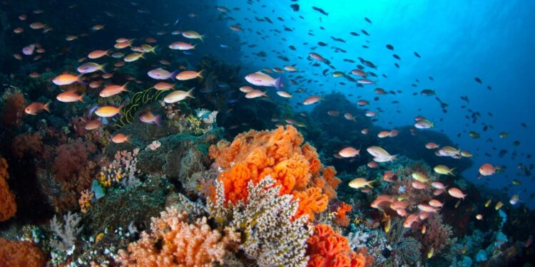
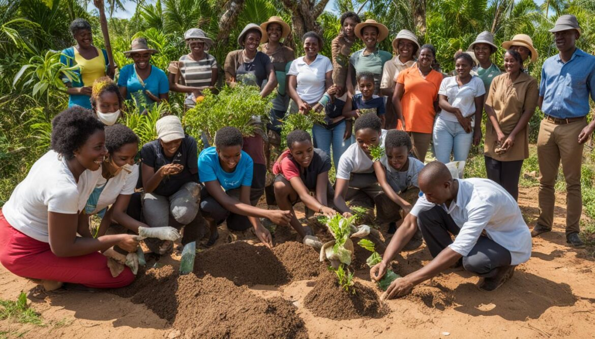

Projetos em Destaque

Proteção da Vida Marinha
Projetos dedicados à preservação de mangais, tartarugas marinhas e habitats costeiros.

Florestas e Fauna
Ações de preservação de habitats críticos, combate à caça furtiva e reflorestamento.

Educação Ambiental
Iniciativas que envolvem comunidades locais na proteção sustentável da biodiversidade.